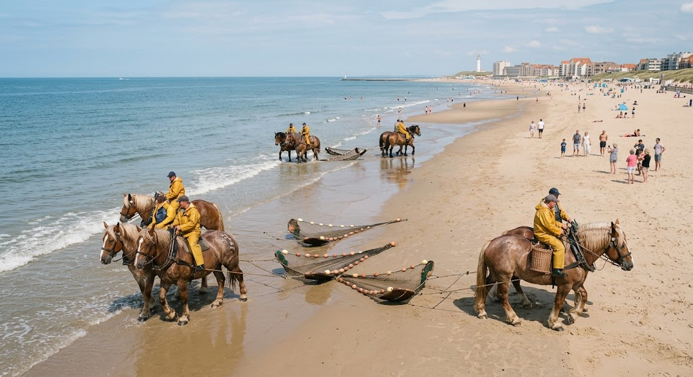
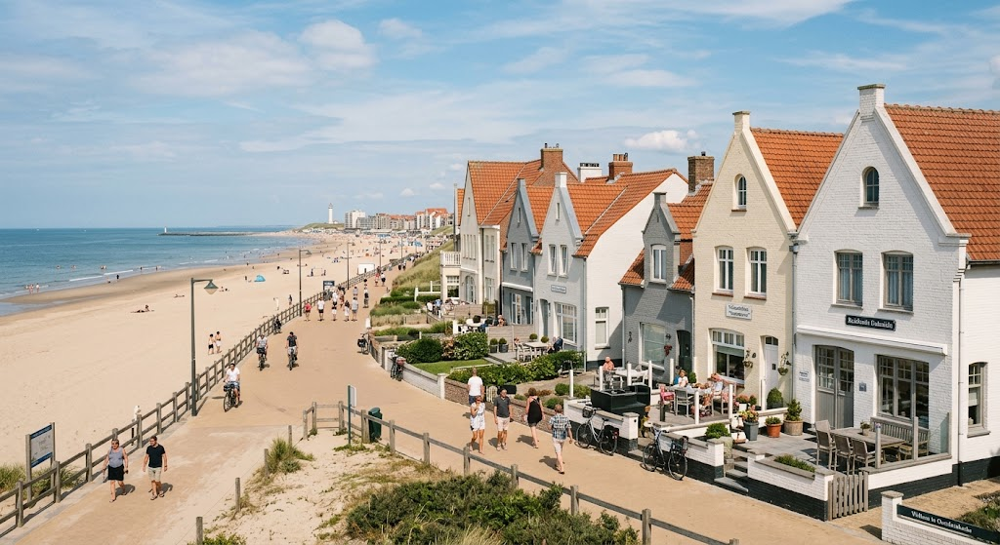

Zien & doen
Oostduinkerke is bekend om zijn brede strand en de paardenvissers.
- Paardenvissers op het strand
- Visserijmuseum NAVIGO
- Wandelen in de duinen
- Zwemmen in de zee
- fietsen aan de dijk

Overnachtingen
Oostduinkerke staat bekend om zijn ongerepte charme, uitgestrekte natuur en de gezellige kstsfeer. Het is de perfecte bestemming voor wie wil ontsnappen aan de dagelijkse drukte en op zoek is naar pure ontspanning, gezonde zeelucht en ultiem comfort. Onze gastenverblijven bieden de ideale basis voor een veelzijdige vakantie of een weekendje weg